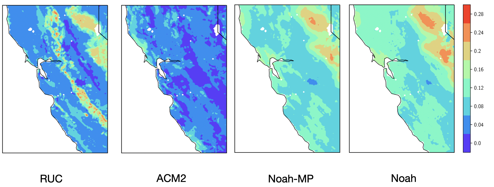
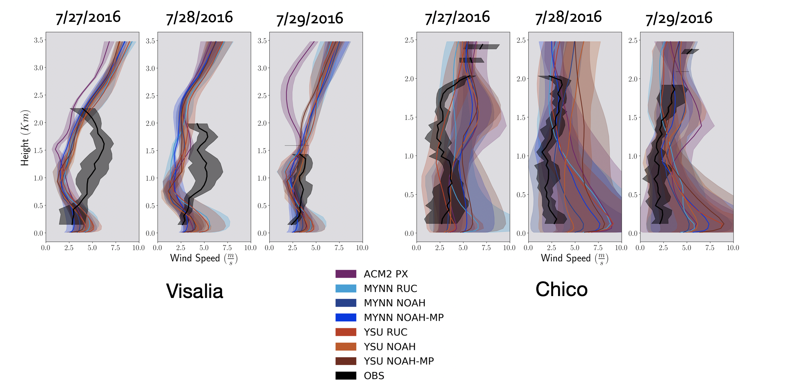

Research
California’s San Central Valley is subject to some of the most complex atmospheric dynamics within the United States, which present challenges to both effective weather and air quality forecasting and water resource and fire hazard management strategies. During the summer, the dynamics in the region are characterized by weak synoptic forcing, up/down valley flows, and entrapment of air between the Costal, Tehachapi, and Sierra Nevada mountain ranges. Moreover, smaller-scale land-surface characteristics, such as heterogeneous land use and variable irrigation, and localized katabatic/anabatic winds from the surrounding mountain slopes lead to atmospheric conditions that vary significantly in space and time.

Current research is focused on investigating the influence of irrigative soil moisture on atmospheric dynamics within California’s Central Valley. This project uses a numerical weather prediction model (the Weather Research and Forecasting model), wind profilers, satellite remote sensing data, airplane measurements, and evapotranspiration data from California’s Irrigation Management Information System to analyze the interactions between the earth’s surface, near surface meteorology, and planetary boundary layer structure.
We are currently conducting a sensitivity test of the base land surface models within the Weather Research and Forecasting Model to discern the treatment of soil moisture within different model configurations. Future plans include working with data assimilation to include observations of soil moisture in simulations to determine if improvement in the representation of near surface atmospheric dynamical features improves.
